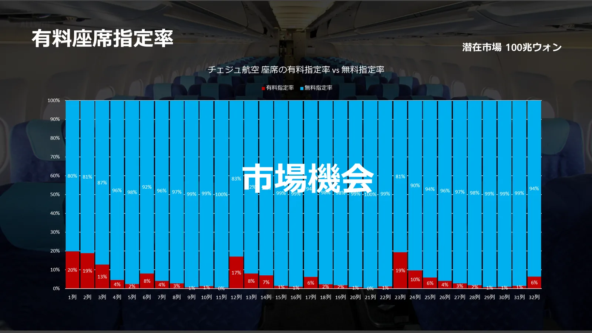
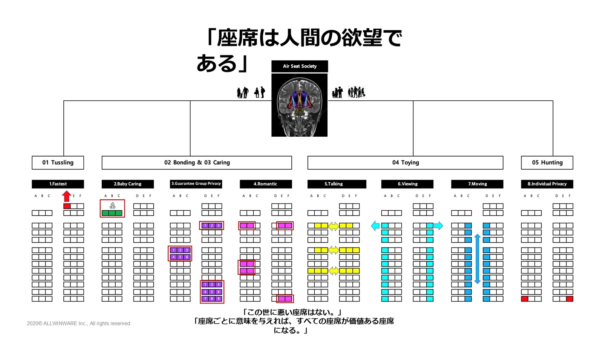
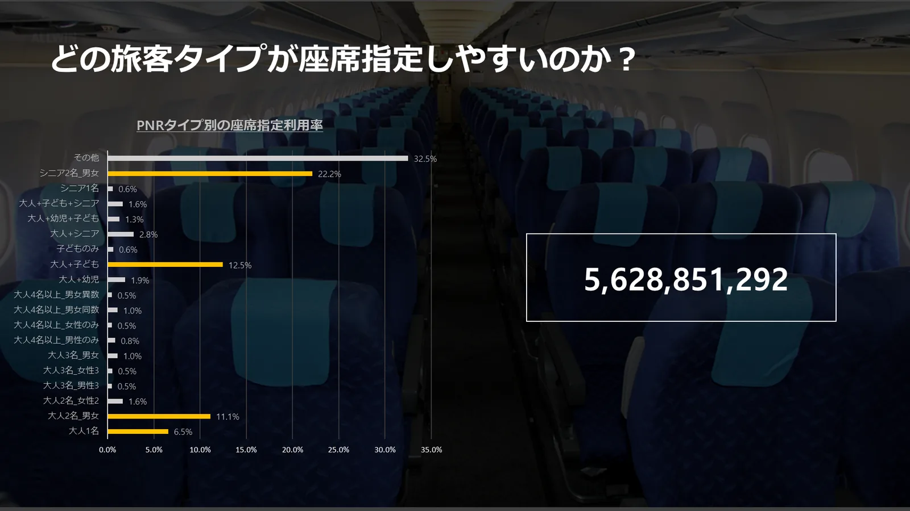
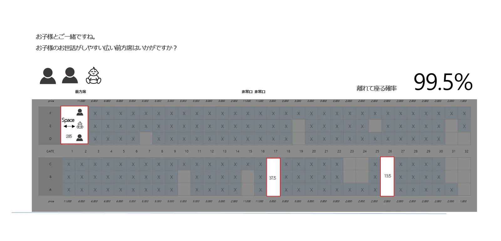
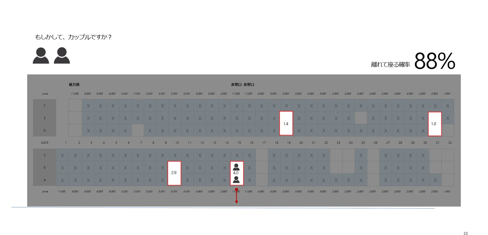
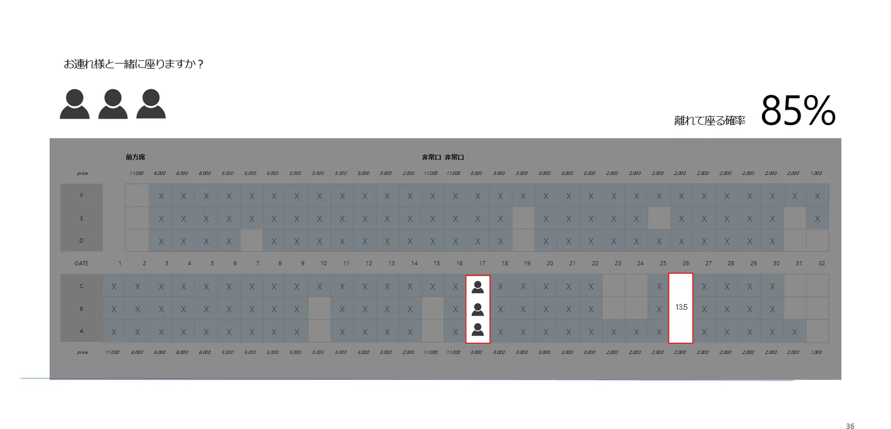
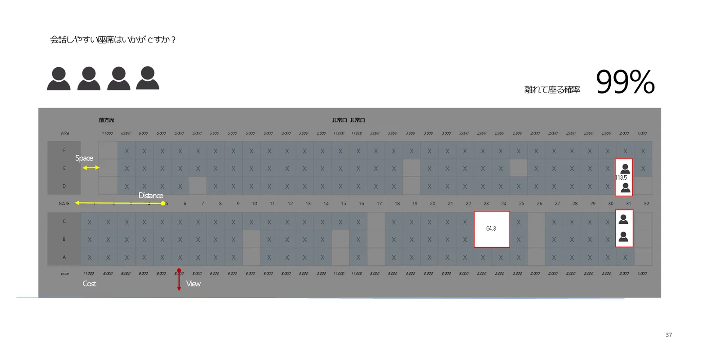
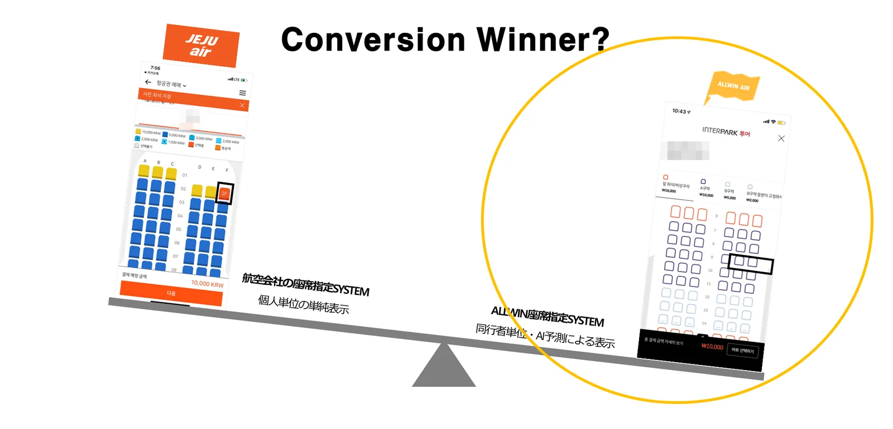
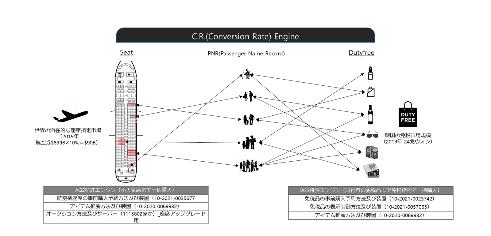
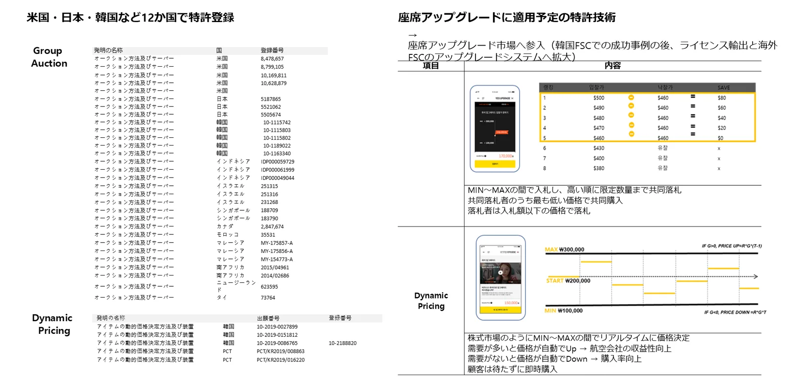

売れていない座席こそが市場
航空機の座席のほとんどは、まだ有料で指定されていません。前方席や非常口席など一部の列だけが売れ、残りの多くは売れないままです。座席ごとに旅行者にとって意味のある理由を添えれば、これらの座席が新たな売上になります。


予約（PNR）から旅行者の状況を読み取る
同じ予約にまとめられた同行者が誰か（1人、カップル、お子様連れ、シニア連れ、グループなど）によって、座席を指定する確率は大きく異なります。オールウィンエアはこのデータをもとに、誰にどの座席を先に見せるかを決めます。

このように提案します
座席を指定しなければ同行者と離れて座る確率をあわせて示し、その状況に合った座席をすぐに提案します。




なぜ購入率が上がるのか

| 区分 | 一般的な航空会社の座席指定 | オールウィンエアの座席指定 |
|---|---|---|
| 選択単位 | 搭乗者ごとに個別 | 予約（PNR）に基づく同行者単位 |
| 表示 | 座席表をそのまま表示 | AI予測でまとめたおすすめ座席を表示 |
| 顧客体験 | 空席を自分で探して比較 | おすすめから選んですぐ決済 |
特許技術


- 航空機座席の事前購入予約方法及び装置（韓国出願 10-2021-0035677）
- アイテム推薦方法及び装置（韓国出願 10-2020-0069932）
- オークション方法及びサーバー — 米国・日本・韓国など12か国で登録（座席アップグレードの価格決定用）
- 免税品の事前購入予約方法及び装置（10-2021-0023742）、免税品の表示制御方法及び装置（10-2021-0057065）

よくあるご質問
- AI座席レコメンドはどのように動きますか？
- 予約（PNR）の同行者構成と旅程を分析し、並んで座れるか、前方・非常口・窓側・通路側などの座席特性を考慮したおすすめ座席を先に表示します。旅行者はおすすめから選ぶか、必要に応じて変更して決済します。
- 航空機の座席にしか使えませんか？
- 座席のある予約であれば、劇場やスタジアムなどにも適用できるように設計されています。
- 関連する特許はありますか？
- PNRに基づく座席の事前購入、アイテム推薦、免税品の事前購入に関する特許を出願しており、座席アップグレード用のオークション・価格決定特許を12か国で登録しています。
オールウィンエアとの連携を始めましょう
航空会社・付帯サービス提供事業者も、旅行会社・OTA・旅行プラットフォームも、ひとつの連携から始められます。連携方式とスケジュールは提携先の環境に合わせてご相談します。日本語・英語でのお問い合わせも可能です。
提携窓口メール（海外からはメールを推奨）partnership@allwin.co.kr
代表電話（韓国国内・平日 09:00〜18:00 KST）+82 1522-2284